CTAT: Product Onboarding
Client Ask
Explore ways to increase the adoption of CTAT, a tutor-writing software, in higher education settings.
Delivered
The design and build (demo) of a new landing page and site map for CTAT.
Role UX designer
Team Grace Guo (researcher), Chris Feng (project manager), Siting Jin (developer)
Overview
Background on CTAT
The Cognitive Tutor Authoring Tools (CTAT) allow instructors to create intelligent tutors, which are powerful for their ability to provide contextual feedback as students work through problems. However, we found that potential users find the software difficult to understand, much less use.
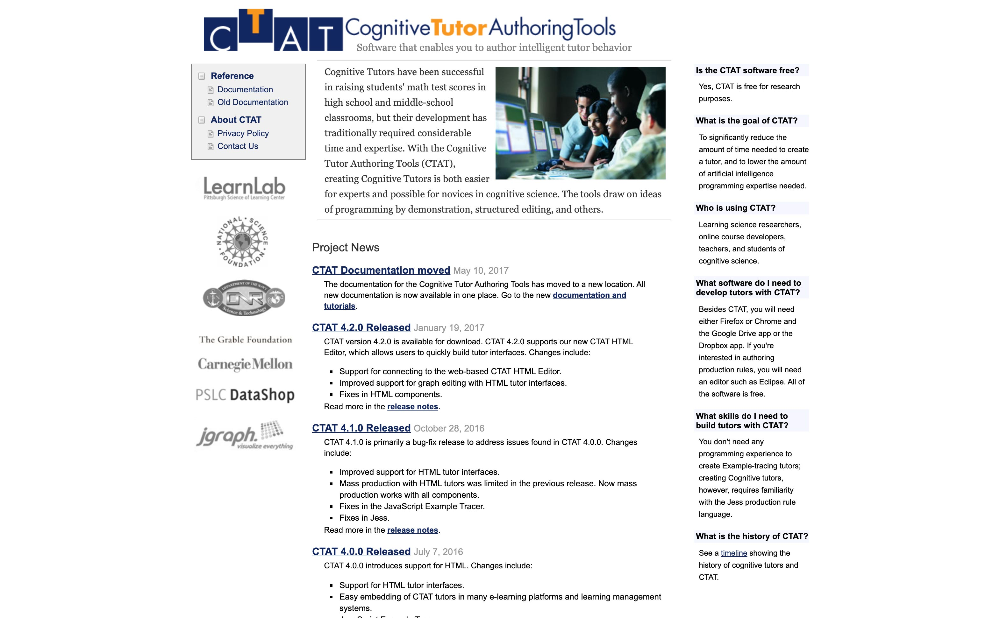
Target Users
Profile
- Age: 30-50
- Professor or instructional designer in higher education, STEM domain
User Needs
- To create challenging problem sets
- To provide students with guidance and feedback
For students, fresh course material and feedback are both crucial to their learning, yet immensely time consuming for instructors. CTAT could alleviate many of these issues by providing contextual feedback at scale. However, many instructors push back against adopting yet another education management tool.
Faculty are busy...if they’re going to put in time to learn new software, it better be worth it.
Research
Barriers to Entry
Through competitive analysis and interviews, we learned about common useful features of educational technologies, and CTAT's competitive edge. However, CTAT is also more complicated and faces 3 major barriers to adoption:
- UI/UX: CTAT's interface is developer- (not user-) centered, resulting in frustrating and unintuitive user experiences.
- Troubleshooting: There is a lack of comprehensive documentation or help forums for troubleshooting.
- Onboarding: New users find CTAT overly complicated, rather than appreciating its advanced capabilities.

Of the 3, we ruled #1 as out of scope, as it would involve altering CTAT’s code base.
Project Goal
Based on our research findings, we decided to aim to help instructors better understand how CTAT can help them in order to increase interest and adoption.
Current User Journey
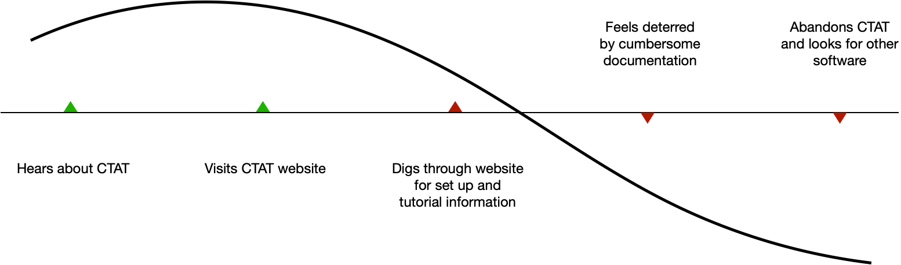
Desired User Journey
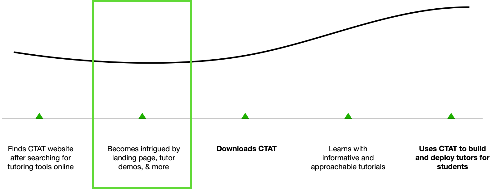
For deliverables, we identified marketing and onboarding as entry points to make users excited about CTAT.
Design
Wireframe Explorations
The existing site had little to no material, so we spent time talking to existing users and researching the education technologies field to find CTAT's competitive edge.
Exploration A
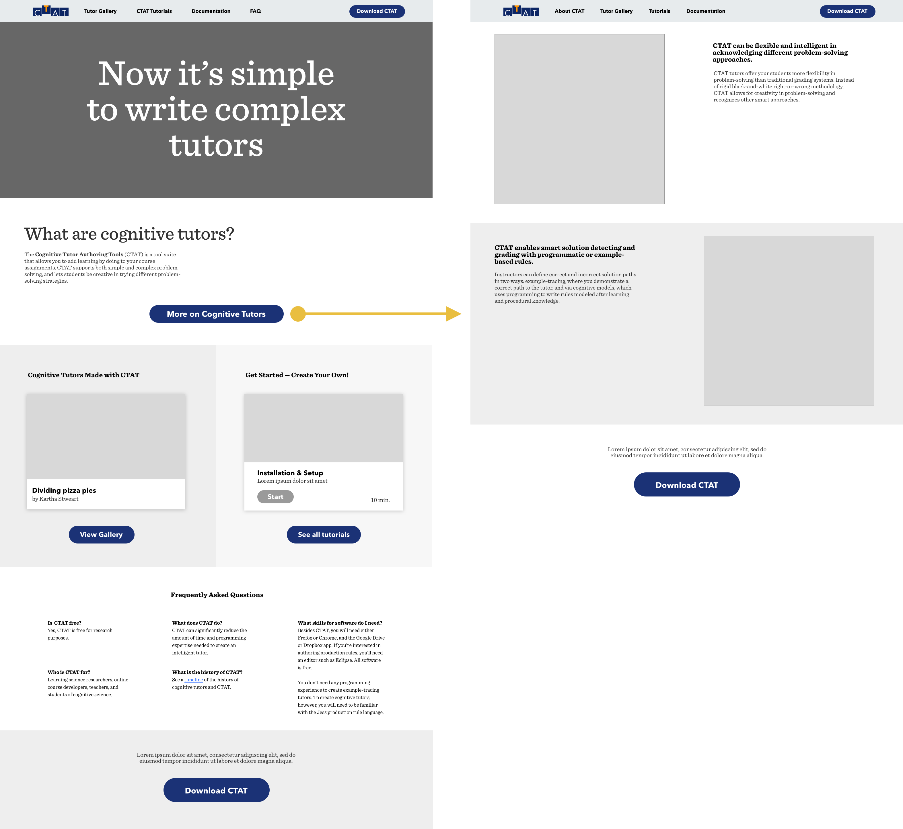
Insights
- Page is mostly text. Difficult to parse.
- All sections require a "view more" click-in. Content feels buried.
Exploration B
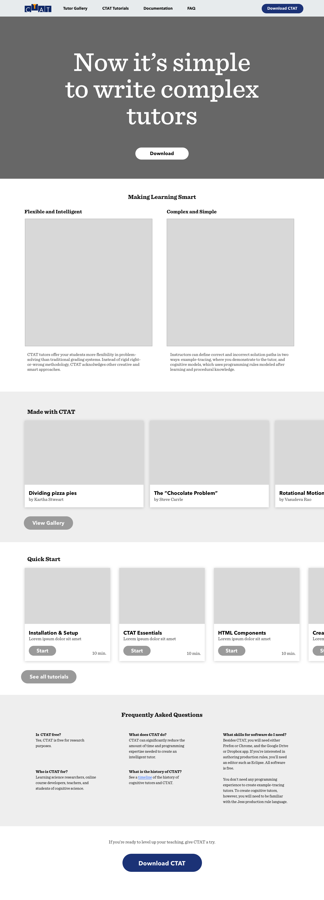
Insights
- Users are drawn in by large images near the top
- Scrolling makes it easy to scan for information
Exploration C
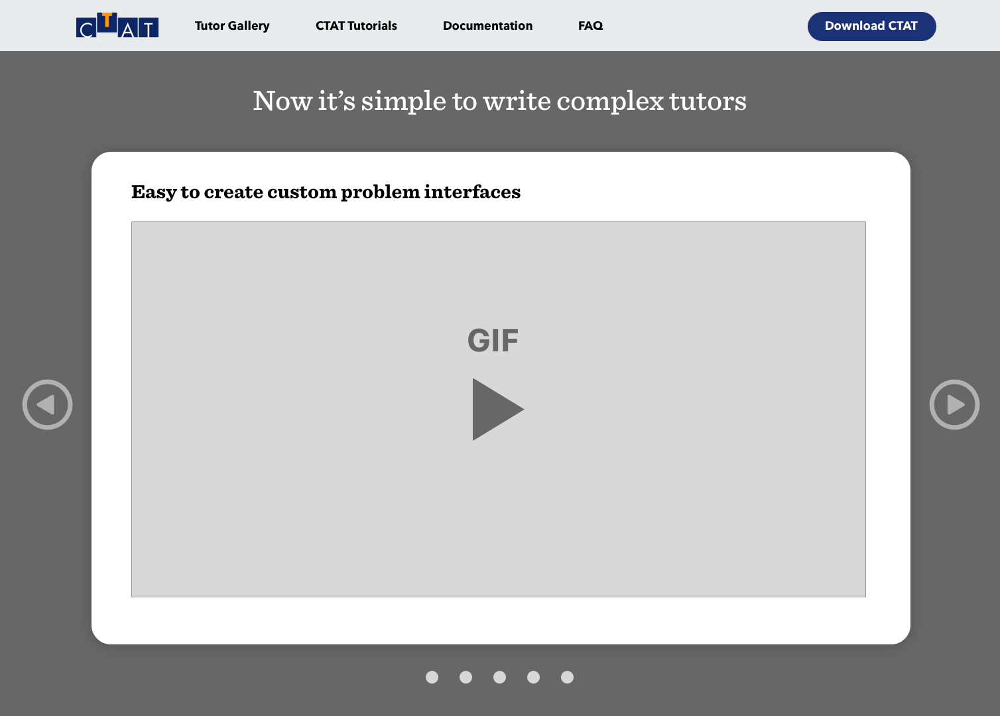
Insights
- With only 1 card on screen, it's difficult to get information quickly
- Animation explains better than image, but requires waiting
Further Explorations
We found that the layout of exploration B worked best to deliver information to users. I iterated on ways to improve engagement, reduce cognitive load, and improve visual appeal.
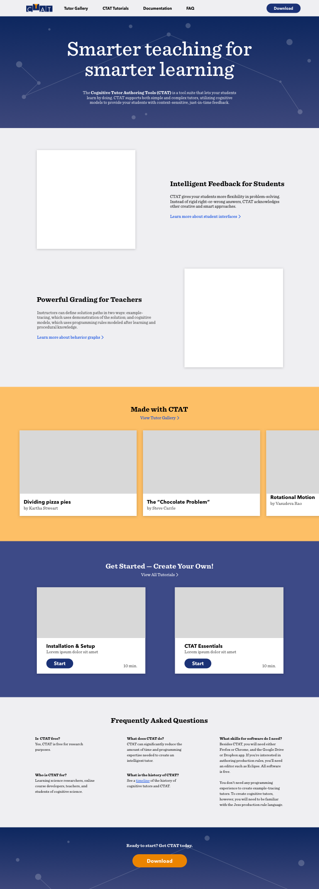
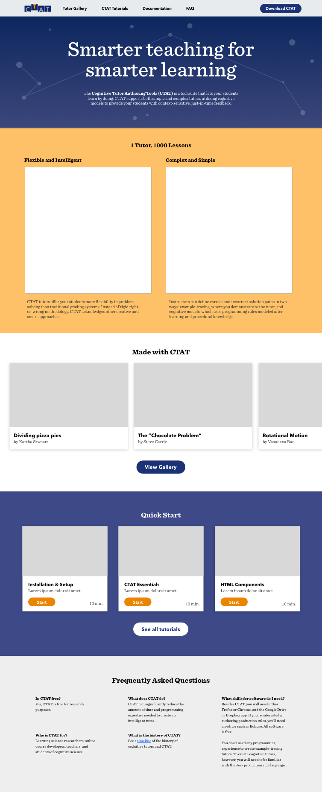
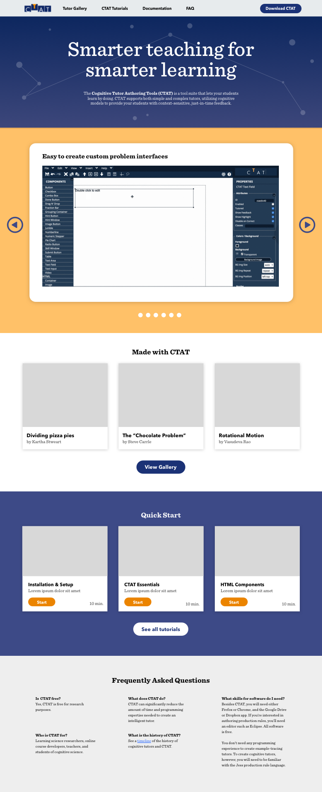
I like that there are images to quickly give me a sense of the product, but I can also scroll to easily see more information.
Final Deliverables
Home page
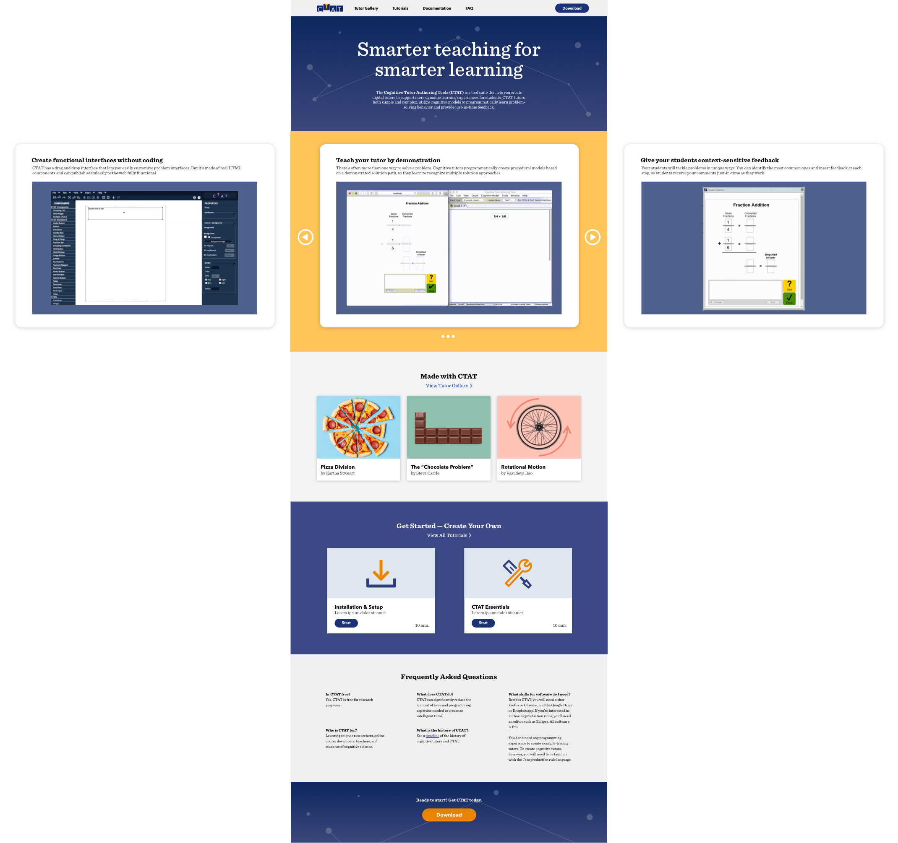
Other context
Beyond the home page, the team brainstormed other content that would be helpful. Among our final features were a tutor demo gallery, tutorials, and complete software documentation.
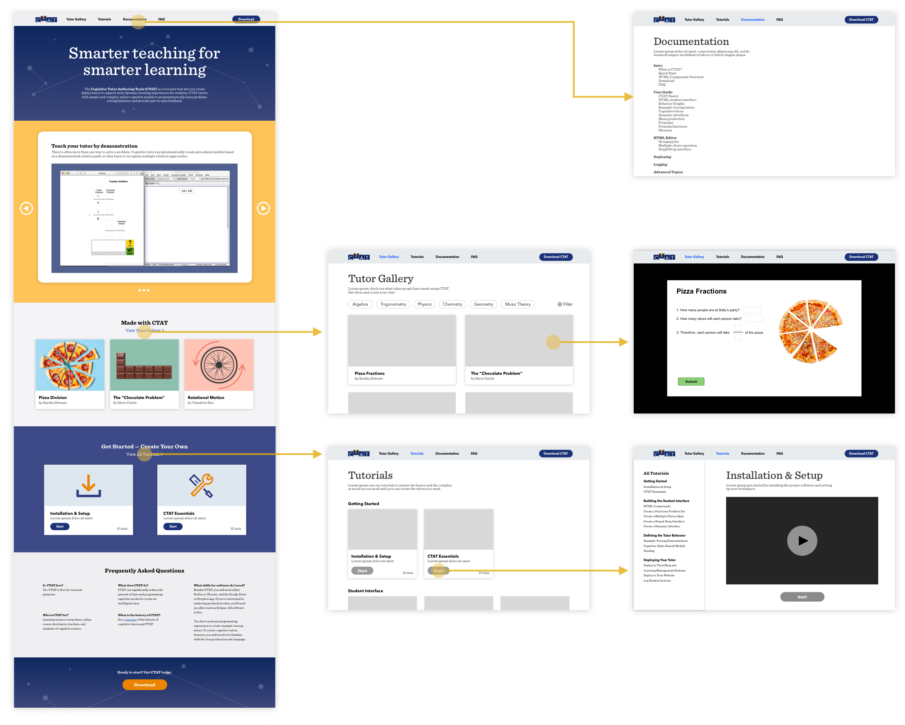
Tutor Gallery
The gallery would showcase live interactive tutors made by CTAT users. In other products like Principle and Unity, we found that concrete demos quickly helped people understand the product's purpose and got them excited about the possibilities before them.
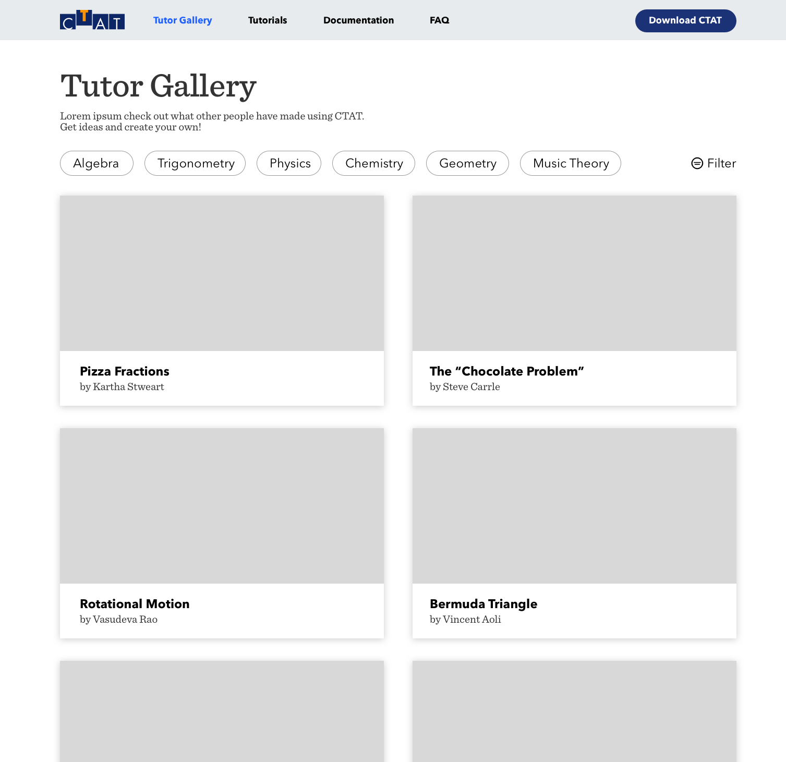
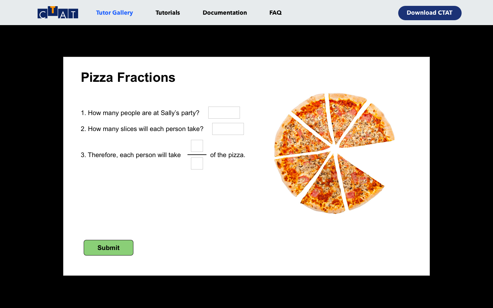
Tutorials
We envisioned sorting the tutorials with clear hierarchy, so users can easily find relevant topics. We also would like to have reformatted the existing content to make it easier to consume.
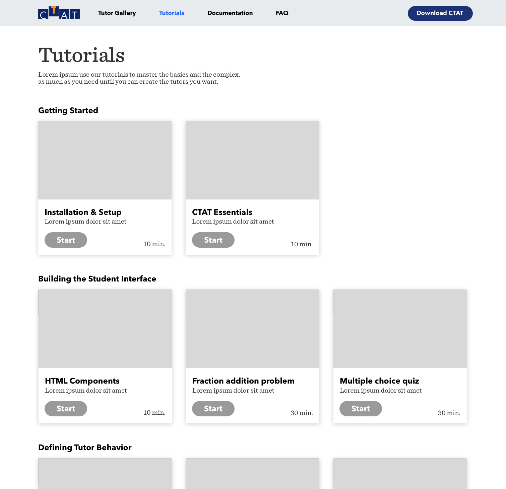
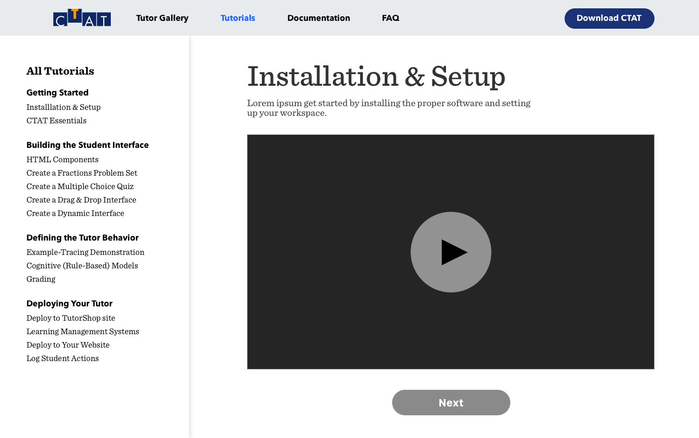
The behavior graph looks super useful. If that’s a basic topic, I want to know what else [CTAT] can do!
Learning Outcomes
- Deriving design goals from open-ended user research
- Balancing user needs with client's ask
Next Steps
Though users showed better learning and understanding of CTAT in our quick A/B testing, we did not track the effectiveness of our design on CTAT adoption over time. Next steps might include:
- Fully creating the tutor gallery, tutorial, documentation and other website sections.
- More refinement of copy and visual design.
- Deploying and evaluating the long-term effect of the new website on CTAT adoption. A good indication of marketing effectiveness could be a positive correlation between views and downloads.